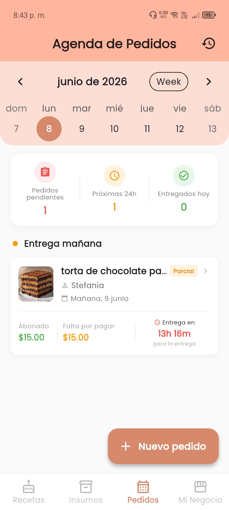
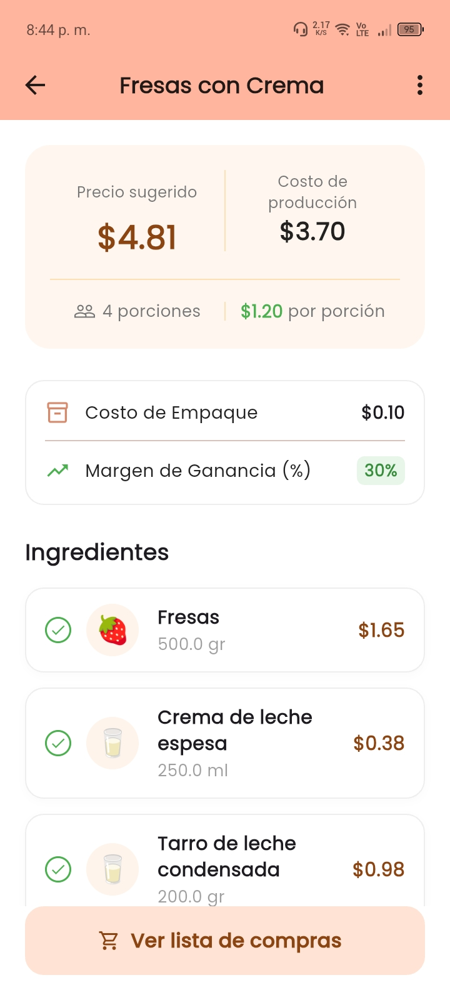
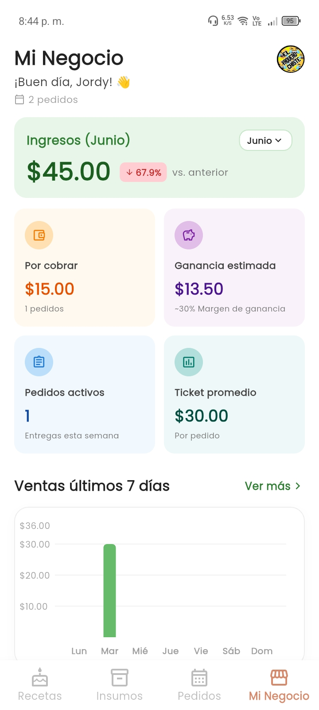

PostrePro: Costos y Pedidos
Gestor Financiero para Emprendedores Gastronómicos
1. Resumen Técnico
| Rol | Desarrollador Mobile (Arquitectura, UI/UX, Backend Cloud y Monetización). |
| Stack Core | Flutter, Dart, Arquitectura Cloud-first con tolerancia Offline. |
| Backend & BD | Firebase Cloud Firestore (NoSQL), Auth, Storage y Cloud Messaging. |
| Gestión de Estado | ValueNotifier nativo para renderizado parcial (60 FPS) y StatefulWidget efímero. |
| Monetización | Unity LevelPlay Mediation (ironSource) gestionado mediante patrón Singleton. |
| Lanzamiento | Junio 2026 (Protegida con ofuscación de código R8 contra ingeniería inversa). |
2. Lógica de Negocio y Solución de Retos
- Algoritmo de Costeo y Proyección: Desarrollo del motor matemático que calcula dinámicamente el costo fraccional de ingredientes, previniendo errores de punto flotante en micro-precios. El sistema proyecta la rentabilidad final sumando costos fijos/variables e integrando márgenes de ganancia para dictar precios por porción automatizados.
- Protección contra Tráfico Inválido (CTR y Ads): Resolución de problemas críticos de monetización ("Fat-finger effect") al cargar intersticiales. Diseñé un "Filtro de Desaceleración UX" con una barrera asíncrona (Future.delayed) que normalizó el CTR al estándar de la industria (2-5%) y protegió la cuenta de penalizaciones.
- Listas Reactivas Complejas: Implementación de mutaciones asíncronas en arrays de datos usando modales acoplados a ValueListenableBuilder. Esto permitió el recálculo total inmediato de la vista financiera sin generar cuellos de botella ni forzar rebuilds completos del árbol de widgets.
3. Diseño de Interfaz y Funcionalidad
UI optimizada para agilizar la carga de datos masivos con manipulación dinámica mediante gestos swipe (Dismissible).

Dashboard y Gestión de Pedidos

Calculadora Dinámica de Costos

Desglose y Rentabilidad
4. Logros y Métricas (Al Q3 2026)
- Tracción del Mercado: Acumula más de 380 instalaciones orgánicas desde su lanzamiento (Junio 2026), validando la alta demanda de herramientas financieras en el nicho repostero.
- Engagement y Utilidad: Mantiene una base activa diaria (DAU/MAU) con un promedio sostenido de 29 usuarios activos recurrentes, utilizando el motor de cálculos a diario.
- Satisfacción del Usuario: Ostenta una calificación perfecta de 5.0 estrellas en Google Play Store, resultado directo de la optimización del rendimiento, prevención de errores (ANR) y una experiencia de usuario (UX) asíncrona muy fluida.